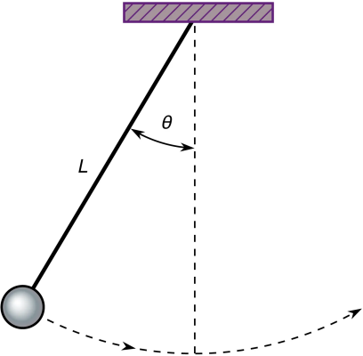

Inverted Pendulum
The Inverted Pendulum benchmark is a classical model of motion. We consider two scenarios, which we refer to as the verification and the falsification scenario.
using ClosedLoopReachability
import OrdinaryDiffEq, Plots, DisplayAs
using ReachabilityBase.CurrentPath: @current_path
using ReachabilityBase.Timing: print_timed
using ClosedLoopReachability: SingleEntryVector, Specification, NoSplitter
using Plots: plot, plot!, xlims!, ylims!, lens!, bbox, savefigModel
A ball of mass $m$ is attached to a massless beam of length $L$. The beam is actuated with a torque $T$. We assume viscous friction with coefficient $c$.
The governing equation of motion can be obtained as follows:
\[\ddot{θ} = \dfrac{g}{L} \sin(θ) + \dfrac{1}{m L^2} (T - c \dot{θ})\]
where $θ$ is the angle that the link makes with the upward vertical axis, $\dot{θ}$ is the angular velocity, and $g$ is the gravitational acceleration. The state vector is $(θ, \dot{θ})$. The model constants are chosen as $m = L = 0.5$, $c = 0$, and $g = 1$.

vars_idx = Dict(:states => 1:2, :controls => 3)
const m = 0.5
const L = 0.5
const c = 0.0
const g = 1.0
const gL = g / L
const mL = 1 / (m * L^2)
@taylorize function InvertedPendulum!(dx, x, p, t)
θ, θ′, T = x
dx[1] = θ′
dx[2] = gL * sin(θ) + mL * (T - c * θ′)
dx[3] = zero(T)
return dx
end;We are given a neural-network controller with 2 hidden layers of 25 neurons each and ReLU activations. The controller has 2 inputs (the state variables) and 1 output ($T$).
path = @current_path("InvertedPendulum", "InvertedPendulum_controller.polar")
controller = read_POLAR(path);The control period is 0.05 time units.
period = 0.05;Specification
The following script creates a different problem instance for the two scenarios, respectively.
function InvertedPendulum_spec(verification::Bool)
# The uncertain initial condition is ``\dot{θ} \in [0, 0.2]``, and ``θ``
# depends on the scenario.
if verification
# ``θ \in [1, 1.175]``.
X₀ = Hyperrectangle(low=[1.0, 0], high=[1.175, 0.2])
else
# ``θ \in [1, 1.2]``. We choose a single point (here: the top-most one):
X₀ = Singleton(high(BallInf([1.1, 0.1], 0.1)))
end
U₀ = ZeroSet(1);
# The control problem is:
ivp = @ivp(x' = InvertedPendulum!(x), dim: 3, x(0) ∈ X₀ × U₀)
prob = ControlledPlant(ivp, controller, vars_idx, period);
# The safety specification is that ``θ ∈ [0, 1]`` for ``t ∈ [0.5, 1]``
# (i.e., the control periods ``10 ≤ k ≤ 20``). A sufficient condition for a
# guaranteed verdict is to overapproximate the result with hyperrectangles.
if verification
unsafe_states = UnionSet(HalfSpace(SingleEntryVector(1, 3, -1.0), -1.0),
HalfSpace(SingleEntryVector(1, 3, 1.0), 0.0))
else
unsafe_states = HalfSpace(SingleEntryVector(1, 3, -1.0), -1.0)
end
function predicate_set_safe(R)
t = tspan(R)
return t.hi <= 0.5 ||
isdisjoint(overapproximate(R, Hyperrectangle), unsafe_states)
end
function predicate_safe(sol; silent::Bool=false)
for F in sol
t = tspan(F)
if t.hi <= 0.5
continue
end
for R in F
if !predicate_set_safe(R)
silent || println(" Potential violation for time range $(tspan(R)).")
return false
end
end
end
return true
end
function predicate_set_unsafe(R)
t = tspan(R)
return t.lo >= 0.5 && t.hi <= 1.0 &&
overapproximate(R, Hyperrectangle) ⊆ unsafe_states
end
function predicate_unsafe(sol; silent::Bool=false)
for F in sol
t = tspan(F)
if t.hi < 0.5
continue
end
for R in F
if predicate_set_unsafe(R)
silent || println(" Violation for time range $(tspan(R)).")
return true
end
end
end
return false
end
if verification
predicate = predicate_safe
else
predicate = predicate_unsafe
end
if verification
T = 1.0
else
T = 11 * period # falsification can run for a shorter time horizon
end
spec = Specification(T, predicate, unsafe_states)
return prob, spec
end
T_warmup = 2 * period; # shorter time horizon for warm-up runAnalysis
To enclose the continuous dynamics, we use a Taylor-model-based algorithm. We also use an additional splitting strategy to increase the precision. These algorithms are defined later for each scenario. To propagate sets through the neural network, we use the DeepZ algorithm:
algorithm_controller = DeepZ();The falsification benchmark is given below:
function benchmark(prob, spec; T, algorithm_plant, splitter, verification, silent::Bool=false)
# Solve the controlled system:
silent || println("Flowpipe construction:")
res = @timed solve(prob; T=T, algorithm_controller=algorithm_controller,
algorithm_plant=algorithm_plant, splitter=splitter)
sol = res.value
silent || print_timed(res)
# Check the property:
silent || println("Property checking:")
if verification
res = @timed spec.predicate(sol; silent=silent)
silent || print_timed(res)
if res.value
silent || println(" The property is verified.")
result = "verified"
else
silent || println(" The property may be violated.")
result = "not verified"
end
else
res = @timed spec.predicate(sol; silent=silent)
silent || print_timed(res)
if res.value
silent || println(" The property is violated.")
result = "falsified"
else
silent || println(" The property may be satisfied.")
result = "not falsified"
end
end
return sol, result
end
function run(; verification::Bool)
if verification
println("# Running analysis with verification scenario")
algorithm_plant = TMJets(abstol=1e-9, orderT=5, orderQ=1)
splitter = BoxSplitter([[1.1, 1.16], [0.09, 0.145, 0.18]])
else
println("# Running analysis with falsification scenario")
algorithm_plant = TMJets(abstol=1e-7, orderT=4, orderQ=1)
splitter = NoSplitter()
end
prob, spec = InvertedPendulum_spec(verification)
# Run the verification/falsification benchmark:
benchmark(prob, spec; T=T_warmup, algorithm_plant=algorithm_plant, splitter=splitter,
verification=verification, silent=true) # warm-up
res = @timed benchmark(prob, spec; T=spec.T, algorithm_plant=algorithm_plant, # benchmark
splitter=splitter, verification=verification)
sol, result = res.value
if verification
@assert (result == "verified") "verification failed"
else
@assert (result == "falsified") "falsification failed"
end
println("Total analysis time:")
print_timed(res)
# Compute some simulations:
println("Simulation:")
trajectories = verification ? 10 : 1
res = @timed simulate(prob; T=spec.T, trajectories=trajectories,
include_vertices=verification)
sim = res.value
print_timed(res)
return sol, sim, prob, spec
end;Run the analysis script for the verification scenario:
sol_v, sim_v, prob_v, spec_v = run(verification=true);# Running analysis with verification scenario
Flowpipe construction:
7.694809 seconds (154.16 M allocations: 6.594 GiB, 14.25% gc time)
Property checking:
0.409983 seconds (2.15 M allocations: 99.237 MiB, 0.00% compilation time)
The property is verified.
Total analysis time:
8.112339 seconds (156.31 M allocations: 6.692 GiB, 13.52% gc time, 0.00% compilation time)
Simulation:
1.198080 seconds (7.32 M allocations: 370.416 MiB, 5.08% gc time, 0.00% compilation time)Run the analysis script for the falsification scenario:
sol_f, sim_f, prob_f, spec_f = run(verification=false);# Running analysis with falsification scenario
Flowpipe construction:
0.276271 seconds (5.62 M allocations: 249.138 MiB, 16.14% gc time)
Property checking:
Violation for time range [0.5, 0.509134].
0.037839 seconds (32.43 k allocations: 1.762 MiB, 0.00% compilation time)
The property is violated.
Total analysis time:
0.321077 seconds (5.66 M allocations: 251.574 MiB, 13.89% gc time, 0.00% compilation time)
Simulation:
0.096205 seconds (81.26 k allocations: 4.259 MiB, 0.00% compilation time)Results
Script to plot the results:
function plot_helper(sol, sim, prob, spec, verification)
vars = (0, 1)
fig = plot(leg=:topright)
lab = "unsafe"
unsafe_states = spec.ext isa UnionSet ? spec.ext : [spec.ext]
for B in unsafe_states
unsafe_states_projected = cartesian_product(Interval(0.5, 1.0), project(B, [vars[2]]))
plot!(fig, unsafe_states_projected; color=:red, alpha=:0.2, lab=lab)
lab = ""
end
plot!(fig, sol; vars=vars, color=:yellow, lw=0, alpha=1, lab="")
initial_states_projected =
cartesian_product(Singleton([0.0]), project(initial_state(prob), [vars[2]]))
plot!(fig, initial_states_projected; c=:cornflowerblue, alpha=1, m=:none, lw=7, lab="X₀")
lab_sim = verification ? "" : "simulation"
plot_simulation!(fig, sim; vars=vars, color=:black, lab=lab_sim)
xlims!(0, spec.T)
plot!(fig; xlab="t", ylab="θ")
return fig
end;Plot the results:
fig = plot_helper(sol_v, sim_v, prob_v, spec_v, true)
ylims!(fig, 0.5, 1.2)
lens!(fig, [0.49, 0.52], [0.99, 1.01]; inset=(1, bbox(0.1, 0.6, 0.3, 0.3)),
lc=:black, xticks=[0.5], yticks=[1.0], subplot=3)
# Plots.savefig(fig, "InvertedPendulum_verification.png") # command to save the plot to a file
fig = DisplayAs.Text(DisplayAs.PNG(fig))fig = plot_helper(sol_f, sim_f, prob_f, spec_f, false)
ylims!(fig, 0.95, 1.22)
# Plots.savefig(fig, "InvertedPendulum_falsification.png") # command to save the plot to a file
fig = DisplayAs.Text(DisplayAs.PNG(fig))